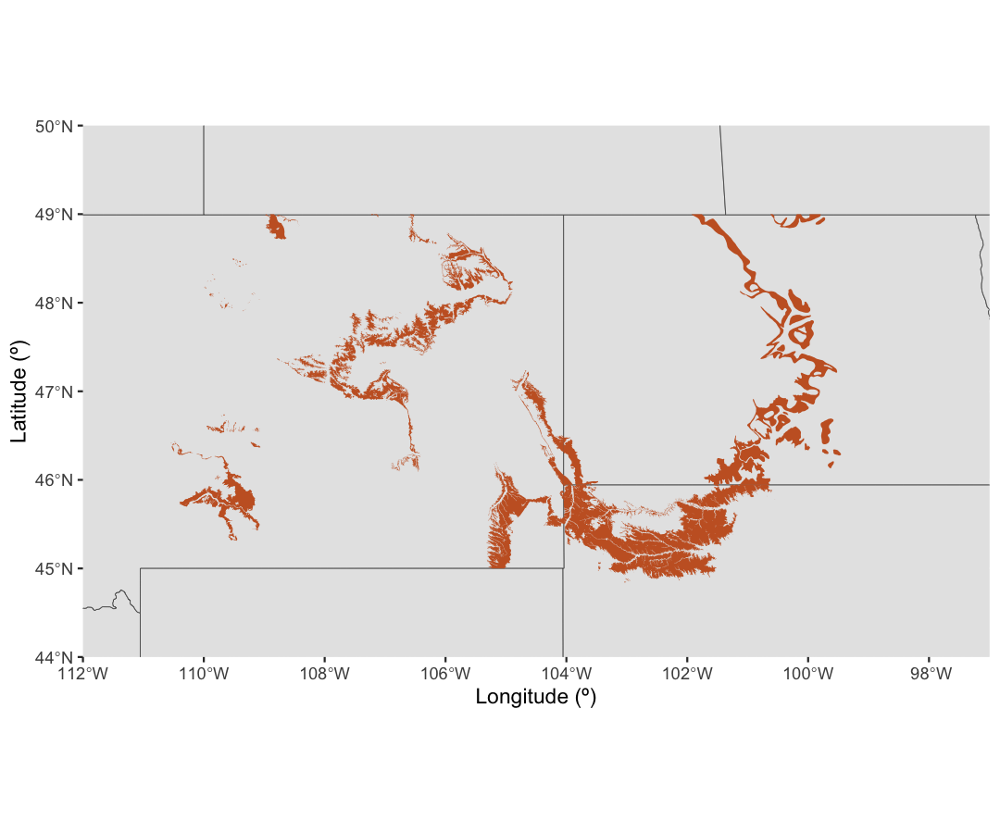
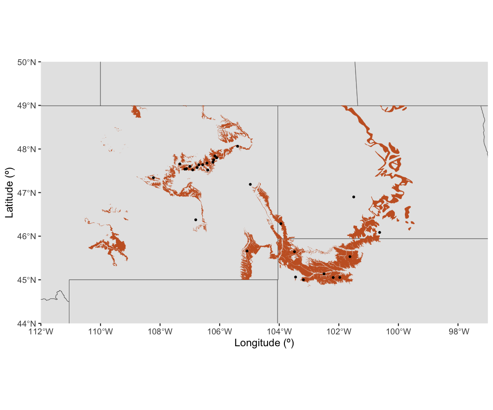
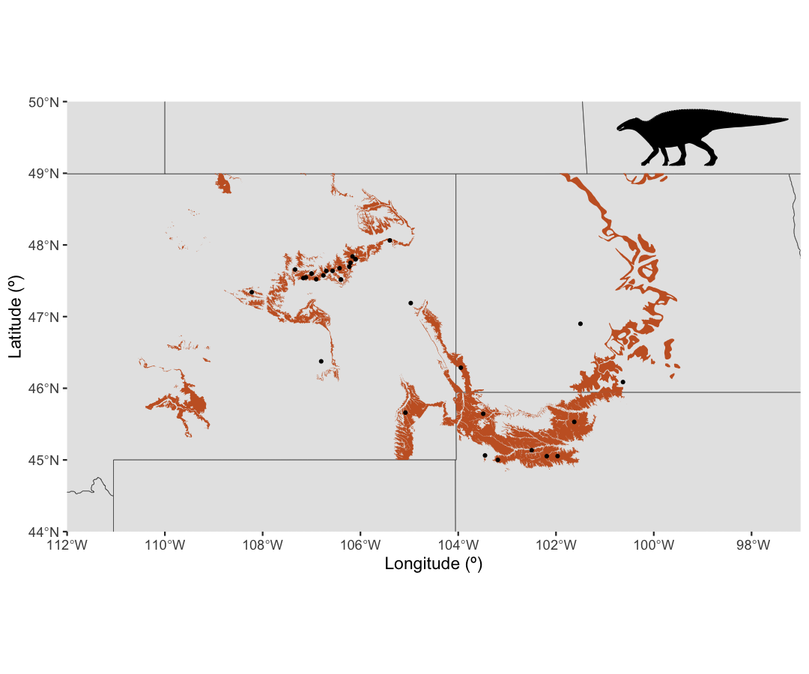

Authors: The Palaeoverse Development Team
Last updated: 2024-07-23
Introduction
rmacrostrat is an R package that allows users to easily
retrieve geologic data from the Macrostrat database and facilitates
analyses of these data within the R environment. This vignette (or
tutorial, if you prefer) is provided to guide you through the
installation process and some of the functionality available within
rmacrostrat. Specifically, we will focus on making a
geographic map of a specific geologic formation, a commonly required
(and very important) figure for a variety of purposes across the
geosciences.
Installation
The rmacrostrat package can be installed via CRAN, or
its dedicated GitHub repository
if the development version is preferred. To install via CRAN, simply
use:
install.packages("rmacrostrat")To install the development version, first install the
devtools package, and then use install_github
to install rmacrostrat directly from GitHub.
install.packages("devtools")
devtools::install_github("palaeoverse/rmacrostrat")You can now load rmacrostrat using the standard
library function:
Before we get into the good stuff, the development team has a
small request. If you use rmacrostrat in your
research, please cite the associated publication. This will help us to
continue our work in supporting you to do yours. You can access the
appropriate citation via:
citation("rmacrostrat")## To cite rmacrostrat in publications, use the following citation:
##
## Jones, L.A., Dean, C.D., Gearty, W., and Allen, B.J. 2024.
## rmacrostrat: An R package for accessing and retrieving data from the
## Macrostrat geological database. TBC TBC TBC
##
## A BibTeX entry for LaTeX users is
##
## @Article{,
## title = {rmacrostrat: An R Package for fetching geologic data from the Macrostrat database.},
## author = {Lewis A. Jones and Christopher D. Dean and William Gearty and Bethany J. Allen},
## year = {2024},
## journal = {TBC},
## pages = {TBC},
## doi = {TBC},
## }Context
The Hell Creek is a geologic formation from the late Cretaceous and
early Paleogene of North America, which is found cropping out across
Montana and North and South Dakota, in the United States. It consists of
both freshwater and brackish clays, mudstones, and sandstones, deposited
by a fluvial system on the shoreline of the Western Interior Seaway. The
Hell Creek is famous for its preservation of an extensive array of both
terrestrial and marginal marine fossils from just prior to the K/Pg mass
extinction (66 million years ago), including widely recognizable
dinosaurs such as Edmontosaurus, Triceratops and
Tyrannosaurus rex. In this vignette, we will show you how to
use rmacrostrat to find the outcrop of the Hell Creek
Formation, and use this to create a map which could be used in a
potential publication. Whilst we have chosen a specific formation, this
approach could be applied to any number of geologic units of interest.
So, let’s dive in!
Fetching
First, we want to find the strat_name_ids that are
associated with the Hell Creek. These IDs are linked to unique
stratigraphic names given to one or more geologic units, such as
Macrostrat units or map units, in the Macrostrat database. We can search
for the relevant IDs by using some of the def_* functions.
These functions provide information about the data stored in the
database. Let’s have a look at the information associated with the name
Hell Creek, using def_strat_names():
# Search stratigraphic names for Hell Creek
def_strat_names(strat_name = "hell creek")## strat_name strat_name_long rank strat_name_id concept_id bed bed_id
## 1 Hell Creek Hell Creek Formation Fm 71267 8598 0
## 2 Hell Creek Hell Creek Member Mbr 71268 8598 0
## 3 Hell Creek Hell Creek Formation Fm 867 8598 0
## mbr mbr_id fm fm_id subgp subgp_id gp gp_id sgp
## 1 0 Hell Creek 71267 0 Montana 2565
## 2 Hell Creek 71268 Lance 1090 0 Black Buttes coal 69391
## 3 0 Hell Creek 867 0 0
## sgp_id b_age t_age b_period t_period c_interval t_units ref_id
## 1 0 100.5 56 Cretaceous Paleogene 0 19
## 2 0 100.5 56 Cretaceous Paleogene 0 19
## 3 0 72.1 66 Cretaceous Paleogene 13 1We can see that there are three different strat_names
associated with the name Hell Creek. You’ll also see that all three have
the same concept_id, showing that these stratigraphic names
are united under a single geologic entity. We can therefore use this
concept_id to search for all references to the Hell
Creek:
# Search stratigraphic names for all associated with Hell Creek concept_id
hc_def <- def_strat_names(concept_id = 8598)
# View data
hc_def## strat_name strat_name_long rank strat_name_id concept_id bed bed_id
## 1 Hell Creek Hell Creek Formation Fm 71267 8598 0
## 2 Hell Creek Hell Creek Member Mbr 71268 8598 0
## 3 Hell Creek Hell Creek Formation Fm 867 8598 0
## mbr mbr_id fm fm_id subgp subgp_id gp gp_id sgp
## 1 0 Hell Creek 71267 0 Montana 2565
## 2 Hell Creek 71268 Lance 1090 0 Black Buttes coal 69391
## 3 0 Hell Creek 867 0 0
## sgp_id b_age t_age b_period t_period c_interval t_units ref_id
## 1 0 100.5 56 Cretaceous Paleogene 0 19
## 2 0 100.5 56 Cretaceous Paleogene 0 19
## 3 0 72.1 66 Cretaceous Paleogene 13 1Yup, these three are the only entries for Hell Creek. But hang on!
Before going ahead and using these to pull our spatial data, you’ll also
notice that one of the strat_names here is actually the
Hell Creek “Member”, which is described as belonging to the Lance
Formation. On a hunt in the literature, it turns out that this is a term
used for the Hell Creek before it was designated to the rank of
formation (Archibald, 1982), so it’s okay to include here. But it’s
always worth remembering to check your data for errors prior to using
it!
Let’s go ahead and use the strat_name_ids associated
with the Hell Creek concept_id to get some spatial data. To
do this, we’ll need to use the get_map_outcrop() function,
which allows us to grab outcrop polygons from geologic maps. Let’s do
that now, specifying that we want the output to be returned as an sf, or
‘simple features’, object. An sf object is a collection of simple
features (representations of real world objects) that includes
attributes and geometries in the form of a data.frame.
# Get spatial outcrop information associated with each Hell Creek strat_name_id
hc <- get_map_outcrop(strat_name_id = hc_def$strat_name_id, sf = TRUE)Nice. Let’s have a look at the first entry to see what the data looks like.
# Look at the first entry
head(hc, n = 1)## Simple feature collection with 1 feature and 20 fields
## Geometry type: MULTIPOLYGON
## Dimension: XY
## Bounding box: xmin: -110.0199 ymin: 45.86057 xmax: -110.0168 ymax: 45.86277
## Geodetic CRS: WGS 84
## map_id source_id name strat_name
## 1 2092425 25 Hell Creek Formation Hell Creek Formation
## lith descrip comments macro_units strat_names
## 1 Major:: {sandstone, mudstone} 9213 867, 71267, 71268
## liths t_int_id t_int_age t_int_name b_int_id b_int_age b_int_name
## 1 7, 10 34 66 Late Cretaceous 34 100.5 Late Cretaceous
## color t_age b_age best_int_name geometry
## 1 #F2FA8C 66 72.1 Maastrichtian MULTIPOLYGON (((-110.0168 4...That looks like what we need! We have a simple features collection consisting of multi-polygons, with attributes that indicate it contains data for the Hell Creek Formation. Now let’s move on to visualizing the data.
Visualization
To plot our outcrop map, we’ll have to install and load some packages that let us handle and plot spatial data. Let’s do that now.
# Install rnaturalearthhires to use maps with state boundaries
devtools::install_github("ropensci/rnaturalearthhires")##
## ── R CMD build ─────────────────────────────────────────────────────────────────
## * checking for file ‘/tmp/RtmpfSPi1y/remotes1f4b6ba8bccc/ropensci-rnaturalearthhires-dd1e210/DESCRIPTION’ ... OK
## * preparing ‘rnaturalearthhires’:
## * checking DESCRIPTION meta-information ... OK
## * checking for LF line-endings in source and make files and shell scripts
## * checking for empty or unneeded directories
## * building ‘rnaturalearthhires_1.0.0.9000.tar.gz’
# Load required packages
library(rnaturalearth)
library(rnaturalearthhires)
library(ggplot2)
library(sf)First, we can use the packages rnaturalearth and
rnaturalearthhires to get the maps and state/province
outlines of the USA, Mexico and Canada to use as a background.
# Load country outlines
us <- ne_states(country = "united states of america", returnclass = "sf")
ca <- ne_states(country = "canada", returnclass = "sf")
mx <- ne_states(country = "mexico", returnclass = "sf")Now we’re ready to plot our outcrop! We can use the
ggplot2 package to help us do this, in particular the
geom_sf() function. Let’s plot our background maps and
outcrop now:
# Plot USA, Canada, and Hell Creek outcrop
ggplot() +
geom_sf(data = us) +
geom_sf(data = ca) +
geom_sf(data = hc, color = NA, fill = "#C7622B") +
coord_sf(xlim = c(-112, -97), ylim = c(44, 50), expand = FALSE) +
labs(x = "Longitude (º)", y = "Latitude (º)")
Looking good! But we can take this map a bit further. A common dinosaur found in the Hell Creek is Edmontosaurus, a large duck-billed dinosaur. Let’s combine what we’ve got so far with data from The Paleobiology Database (PBDB) to make a map of Edmontosaurus occurrences in the Hell Creek.
# Access PBDB API for Edmontosaurus occurrences from the Hell Creek
ed <- read.csv(paste0("https://paleobiodb.org/data1.2/occs/list.csv",
"?base_name=Edmontosaurus&strat=Hell%20Creek&show=full"))
# Turn points into spatial features
ed_sf <- st_as_sf(x = ed, coords = c("lng", "lat"))
# Set coordinate system (WGS84) for Edmontosaurus occurrences
st_crs(ed_sf) <- st_crs(4326)
# Plot
ggplot() +
geom_sf(data = us) +
geom_sf(data = ca) +
geom_sf(data = hc, color = NA, fill = "#C7622B") +
geom_sf(data = ed_sf, color = "black", size = 0.7) +
coord_sf(xlim = c(-112, -97), ylim = c(44, 50), expand = FALSE) +
labs(x = "Longitude (º)", y = "Latitude (º)")
Those Edmontosaurus occurrences are now plotted on the map. You may notice that there are some occurrences that don’t overlay the plotted outcrop, despite apparently being from the Hell Creek. This could be due to an error in the PBDB data, potentially relating to the accuracy of the latitude and longitude co-ordinates, or it could be that we’re missing some outcrop data of the Hell Creek. Either way, this shows that plotting occurrences over their respective outcrop can a good way to explore potential data issues.
Aside from those errant occurrences, it’s starting to look pretty
good! But we can add a few more finishing touches to really make it pop.
First, let’s the use package rphylopic
to add a silhouette of Edmontosaurus to the map.
# Get an appropriate silhouette for Edmontosaurus
ed_uuid <- get_uuid(name = "Edmontosaurus", n = 3)[3]
# Get the attribution information for the author of the image
get_attribution(uuid = ed_uuid, text = TRUE)## Organism silhouettes are from PhyloPic (https://www.phylopic.org/; T. Michael Keesey, 2023) and were added using the rphylopic R package ver. 1.4.0 (Gearty & Jones, 2023). Silhouette was made by Matt Dempsey, 2020 (CC BY 3.0). Silhouette was contributed by Matthew Dempsey.
# Setup data.frame for the silhouette (plot location)
silhouette_df <- data.frame(x = -99, y = 49.5, name = "Edmontosaurus")
# Plot the map
ggplot() +
geom_sf(data = us) +
geom_sf(data = ca) +
geom_sf(data = hc, color = NA, fill = "#C7622B") +
geom_sf(data = ed_sf, color = "black", size = 0.7) +
coord_sf(xlim = c(-112, -97), ylim = c(44, 50), expand = FALSE) +
geom_phylopic(data = silhouette_df, aes(x = x, y = y), uuid = ed_uuid,
size = 0.8, alpha = 1, color = "black") +
labs(x = "Longitude (º)", y = "Latitude (º)")
Nice! Finally, we can add a few other touches to make it a publication-worthy figure, including an inlay map, a scale bar, and a North arrow:
# Load `ggpatial` package to add annotations, and `cowplot` to stitch final map
# together
library(ggspatial)
library(cowplot)
# Make an inlay using the country maps we included earlier
inset <- ggplot() +
geom_sf(data = us) +
geom_sf(data = ca) +
geom_sf(data = mx) +
annotate("rect", xmin = -112, xmax = -97, ymin = 44, ymax = 50,
color = "red", fill = NA) +
xlim(-130, -70) +
ylim(30, 70) +
labs(x = NULL, y = NULL) +
theme_test() +
theme(axis.text = element_blank(),
axis.ticks = element_blank(),
axis.ticks.length = unit(0, "pt"),
axis.title = element_blank(),
plot.margin = margin(0, 0, 0, 0, "cm"),
panel.background = element_rect(fill = "lightblue"))
# Add a scale bar, North arrow, and new theme to the original map and save it
ed_hc_map <- ggplot() +
geom_sf(data = us) +
geom_sf(data = ca) +
geom_sf(data = hc,
color = NA,
fill = "#C7622B") +
geom_sf(data = ed_sf,
color = "black",
size = 0.7) +
coord_sf(xlim = c(-112, -97), ylim = c(44, 50), expand = FALSE) +
annotation_north_arrow(location = "br",
pad_y = unit(0.75, "cm"),
height = unit(1, "cm"), width = unit(1, "cm")) +
annotation_scale(location = "br", width_hint = 0.3) +
geom_phylopic(data = silhouette_df, aes(x = x, y = y), uuid = ed_uuid,
size = 0.8, alpha = 1, color = "black") +
labs(x = "Longitude (º)", y = "Latitude (º)") +
theme_bw()
# Plot the two together
ggdraw() +
draw_plot(ed_hc_map) +
draw_plot(inset, 0.08, 0.63, width = 0.2, height = 0.2)
And that’s it! One completed map.
…But that’s not all we can do with outcrop data! As a quick extra, let’s calculate the total outcrop area of the Hell Creek Formation:
# Fix potential issues with polygon boundaries/shapes
hc_area <- st_make_valid(hc)
# Calculate the area in meters squared
area_m <- sum(st_area(hc_area))
# Convert the area to kilometers squared
area_km <- units::set_units(area_m, km^2)
print(area_km)## 37564.86 [km^2]So from these few lines of code, we can work out that the total outcrop area for the Hell Creek Formation is a touch larger than the total land area of Polynesia (which is approximately 37,141 km2)! Pretty neat.
Hopefully this vignette has shown you some potential uses for
rmacrostrat functions and helped provide a workflow for
your own analyses. If you have any questions about the package or its
functionality, please feel free to join our Palaeoverse Google
group and leave a comment; we’ll aim to answer it as soon as
possible!
If you’re interested in learning more about rmacrostrat,
don’t forget to check out our other vignettes! You can see which ones
are available by calling
vignette(package = "rmacrostrat").
References
Archibald, J.D. (1982). A study of Mammalia and geology across the Cretaceous-Tertiary boundary in Garfield County, Montana (Vol. 122). Univ of California Press.
Dunnington, D. (2023). ggspatial: Spatial Data Framework for ggplot2. R package version 1.1.9, https://CRAN.R-project.org/package=ggspatial.
Gearty, W., and Jones, L.A., 2023, rphylopic: An R package for fetching, transforming, and visualising PhyloPic silhouettes: Methods in Ecology and Evolution, v. 14, p. 2700–2708, doi: 10.1111/2041-210X.14221.
Massicotte, P., South, A. (2023). rnaturalearth: World Map Data from Natural Earth. R package version 1.0.1, https://CRAN.R-project.org/package=rnaturalearth.
Pebesma, E., & Bivand, R. (2023). Spatial Data Science: With Applications in R. Chapman and Hall/CRC, doi: 10.1201/9780429459016.
Pebesma, E., 2018. Simple Features for R: Standardized Support for Spatial Vector Data. The R Journal 10 (1), 439-446, doi: 10.32614/RJ-2018-009.
Peters, S.E., Husson, J.M., and Czaplewski, J., 2018, Macrostrat: A Platform for Geological Data Integration and Deep‐Time Earth Crust Research: Geochemistry, Geophysics, Geosystems, v. 19, p. 1393–1409, doi: 10.1029/2018GC007467.
Uhen, M.D., Allen, B., Behboudi, N., Clapham, M.E., Dunne, E., Hendy, A., Holroyd, P.A., Hopkins, M., Mannion, P., Novack-Gottshall, P. and Pimiento, C., 2023. Paleobiology Database User Guide Version 1.0. PaleoBios, 40(11). doi: 10.5070/P9401160531.
Wickham H. 2016 ggplot2: Elegant Graphics for Data Analysis. Springer-Verlag New York.
Wickham H., Hester J., Chang W., Bryan J. (2022). devtools: Tools to Make Developing R Packages Easier. R package version 2.4.5, https://CRAN.R-project.org/package=devtools.
Wilke C (2024). cowplot: Streamlined Plot Theme and Plot Annotations for ‘ggplot2’. R package version 1.1.3, https://CRAN.R-project.org/package=cowplot.